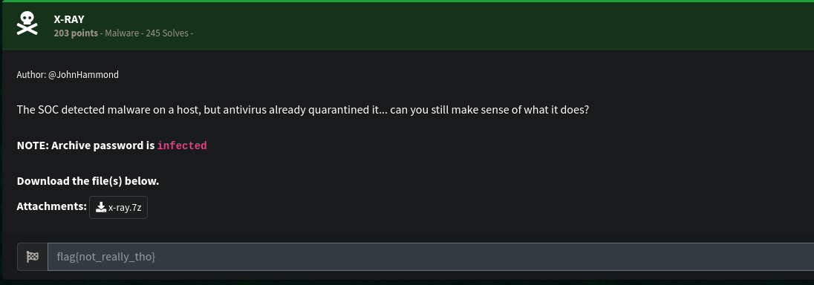
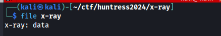
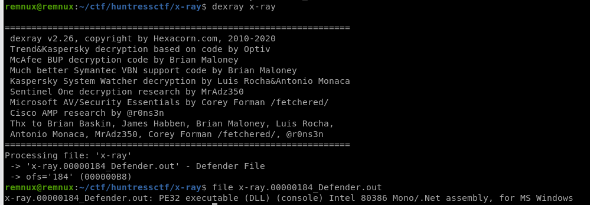
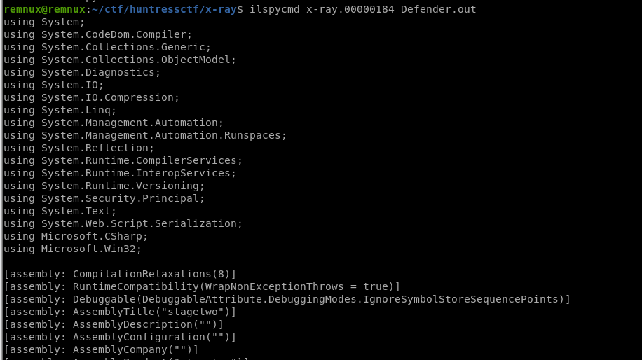
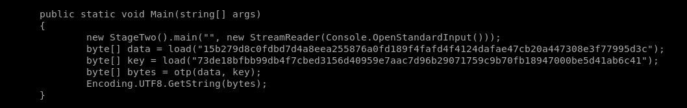
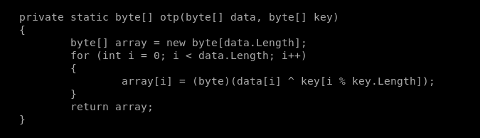
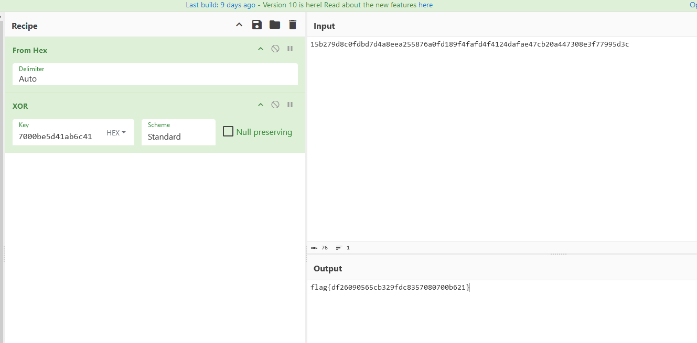

[Malware] X-Ray
The following challenge description has been given:

We checked the filetype of the given file but it didn’t return notable.

We have a hunch that it may be a quarantined version of the malware created by Windows Defender. We ran dexray with it.

It worked! And it’s a dotnet so it’s easy to decompile with ilSpy.

We looked at the Main function and we can see two hex blob loaded.

We are also curious about the otp() function. Turns out that the two bytes are just being XORed together.

We used Cyberchef to do the XOR operation and got the flag.
